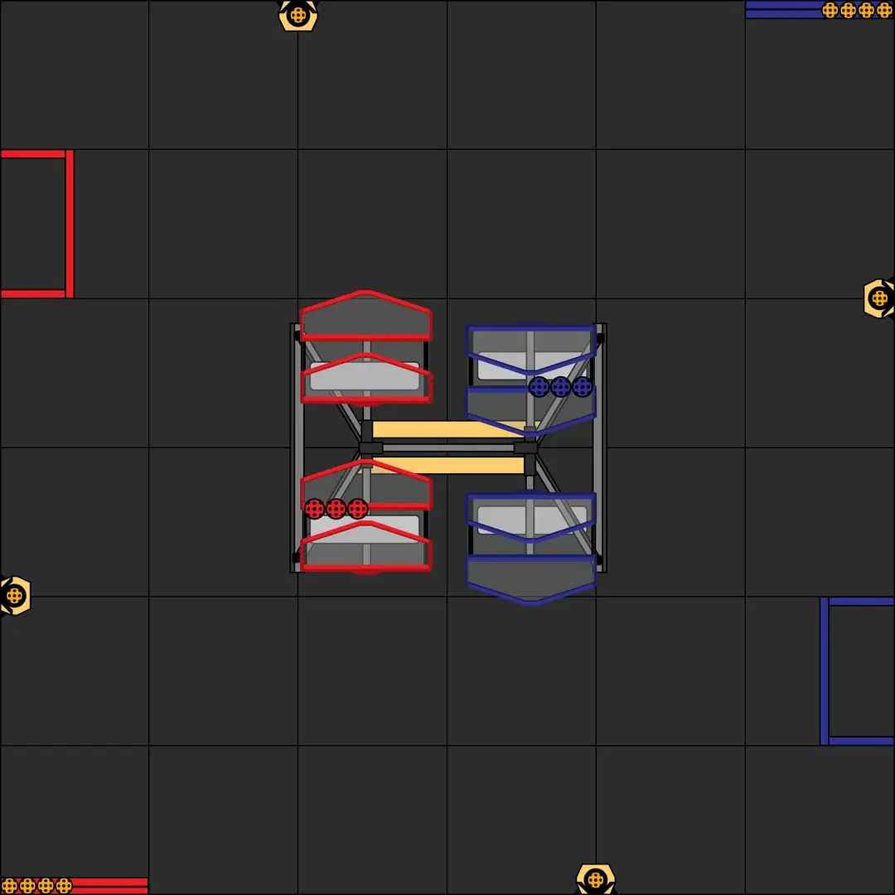

Blue alliance Start
(88, 8) at 90° · 4 legs then park
· 211" of path.

In driving order. “Turn” is the heading change over that leg;
the robot turns evenly across the whole leg (linear), it does not turn then drive.
| Leg | Pose | X | Y | Heading | Turn | Control points | Length | Nearest element |
|---|---|---|---|---|---|---|---|---|
| 1 | path1 | 133.8565 | 44.6472 | 13° | -77° | — | 58.7" | Blue HIVE (47") |
| 2 | point2 | 94.4750 | 119.2760 | 255° | -118° | 120.3380, 105.8241 | 86.7" | Blue HIVE (49") |
| 3 | point3 | 104.9565 | 131.8538 | 135° | -120° | 115.7917, 114.9204 | 26.5" | Blue Alliance FLOWER (51") |
| 4 | point4 | 104.1454 | 121.7491 | 247° | +112° | — | 10.1" | Blue Alliance FLOWER (45") |
| 5 | park | 128.7000 | 105.9000 | 247° | +0° | — | 29.2" | Blue Alliance FLOWER (16") |
Mirrored copy of Red Left: X = 144 − red X, heading = 180 − red heading.
BlueLeftLime1 drives this same route, then runs a Limelight ball search before parking. That search is driven by what the camera sees, so it has no fixed path and cannot be drawn.
Blue Left Auto1S / 1T / 2T Blue Left AutoBlue Left Lime 11S / 1T / 2T Blue Left Lime 1Source: BlueLeftAuto.java, BlueLeftLime1.java
// leg 1 → path1
Paths.line(start, path1).linear(start, path1)
// leg 2 → point2
Paths.curve(path1, point2Control1, point2).linear(path1, point2)
// leg 3 → point3
Paths.curve(point2, point3Control1, point3).linear(point2, point3)
// leg 4 → point4
Paths.line(point3, point4).linear(point3, point4)
// leg 5 → park
Paths.line(from, park).constant(from.heading())Park is not a fixed final leg. The OpMode checks every loop whether the time left is only just enough to reach the park spot, and if so it abandons the route and drives there from wherever it is. The park leg drawn above is the normal end-of-route case.